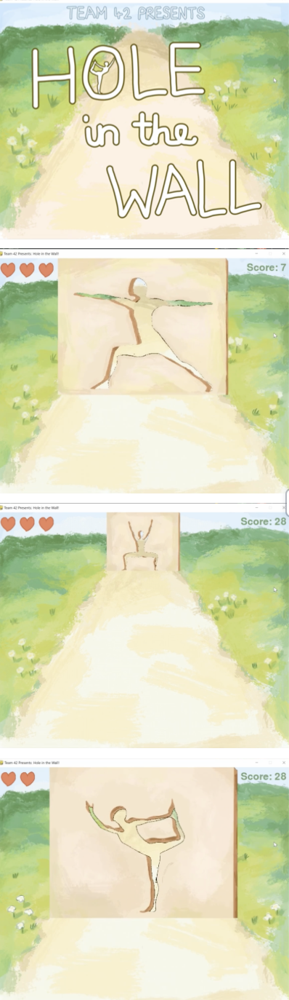

Stretching is important for the health and flexibility of muscles, but most people are unaware that it must happen on a regular basis. Our project aims to gamify streaching such that it happens as a byproduct of playing a game similar to the "hole on the wall". So the user initiates the game and it has to match the poses of the screen. To determine the pose we are using an AI pose recigniton algorithm (an SVM machine), that looks at the shape, recognizing it, and then it determines how close the player was to the desired position and gives or extracts points ot the player based on this.